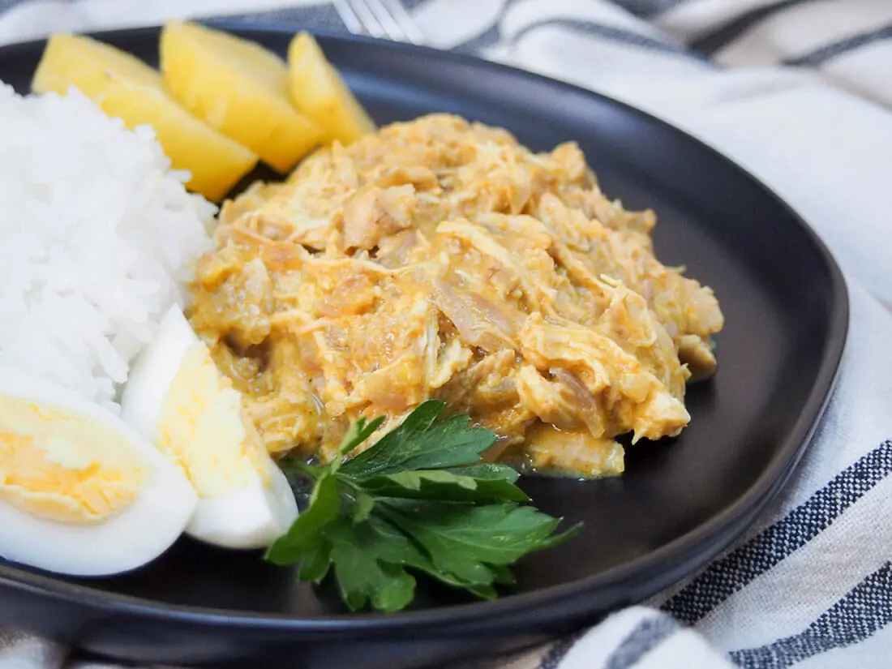

Aji de gallina

Aji de gallina is a classic Peruvian dish, with
shredded chicken wrapped in a smooth, creamy sauce
with chili, cheese and walnuts. It's a delicious meal,
plus perfect to adapt for leftovers.
Ingredients
-
3 ¾ cups cooked chicken 480g, approx (see note 1 to cook
from scratch)
-
2 slices bread or 3, if small, crusts removed
- ⅓ cup milk 80ml
- 1 onion
- 2 cloves garlic
- 3 tablespoon walnuts 28g
-
3 tablespoon grated parmesan 8g, or a little
more, to taste
- 2 tablespoon vegetable oil
- 2 teaspoon aji amarillo chili paste
- ¼ teaspoon turmeric
- ½ cup chicken stock 120ml (or reserved
poaching liquid)
Steps to make Aji de gallina
-
Poach the chicken (if making from scratch) then once cool enough
to handle, shred it up (alternatively, shred leftover cooked
chicken).
- Soak the bread in milk for a few minutes.
-
Put the soaked bread, walnuts and parmesan in a blender or food
processor and blend until smooth.
-
Soften the onion in a pot then add the garlic, aji amarillo and
turmeric and cook a minute more.
-
Add the bread-walnut mixture, the chicken and stock. Mix well and
cook a few more minutes before serving.